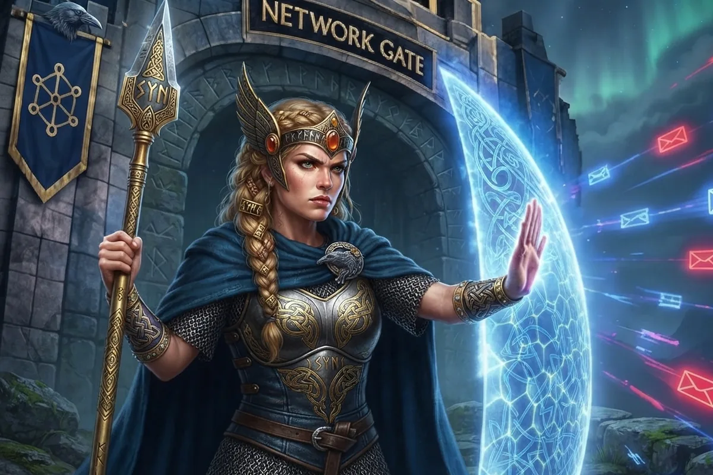
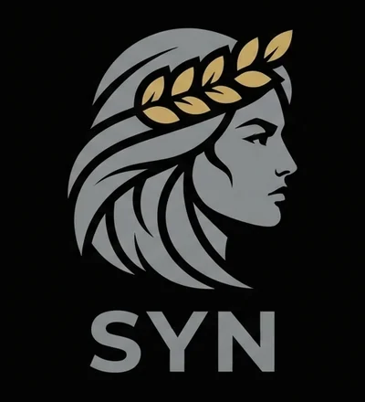

Phishing-style domain looked upStudy laptop · 21:02
Unknown program downloaded and startedStudy laptop · 21:03 · same browser session
Program connects to a newly registered domainStudy laptop · 21:04 · threat-intel match
Syn watches your home or small-business network around the clock, triages every security event, explains what it thinks in plain language and only taps you on the shoulder when something really needs a person.

Syn does the first pass on everything. You make the calls that need a human.
Every few minutes it gathers what happened on your network and your computers, flags what is new or unusual and decides what is suspicious, benign or expected.
Only for serious, new events on the devices you care about. Everything else waits quietly in your queue.
Tap the verdict to read why, see the related events, then accept it, mark it suspicious or ask a follow-up question.
Everything a tier-one analyst would do on the night shift, in a dashboard built for a family or a small team.
Open events is your backlog: everything nobody has looked at yet, however old. It only shrinks when you (or a rule you turned on) accept something, so nothing slips away because it happened last week.
Every event gets a label (suspicious, benign or expected) with a confidence and a reason in plain English. Tap the label to read why.
Attacks and mistakes rarely show up as one alert. Syn links events that share a device, an address, a domain, an account or a moment in time, and reviews the group together.
Turn on auto-close and Syn files away the events it is confident are benign or expected, so your queue holds only what needs a decision.
Syn was built phone-first. Add it to your home screen and it behaves like an app, with alerts on your lock screen.
Syn learns what normal looks like for each device and computer, then tells you what is new.
New programs and changed files, new destinations, new accounts, failed and successful logins, newly opened ports and agents that stop reporting.
IDS hits, connections to known-bad addresses and domains, newly registered domains, DNS tunnelling and malware fingerprints. Look up any IP, domain or hash.
Traffic spikes, new countries, new services, devices calling home on a timer, and traffic that crosses between zones it shouldn't.
Every admin login between devices (SSH, RDP, remote shells and more), successful and failed, on a map of who talks to whom.
Devices ranked by how risky they are, weaknesses mapped to MITRE ATT&CK, and a to-do list of misconfigurations that clears itself as you fix them.
Devices show up by their names from your inventory, DHCP and gateway, not as bare addresses, each with its own page of traffic, habits and findings.
A read-only chat assistant that knows your data. Tap 💬 on any event for suggested questions, or just ask what happened last night.
Admin, Network defender and User roles. Family members see and get alerts only for the devices assigned to them.
Zones, allowed traffic, known-benign lists, alert rules and AI spending caps are edited as simple tables in the browser. Pick your own AI provider or run a local model.

In Norse myth, Syn is the goddess who guards the doors of the hall: she shuts them against those who should not enter, and she defends people in disputes. That is the job of this app: a tier-one analyst that watches the door of your network, turns away what does not belong and takes your side when something looks wrong.
It is also a nod to networking: SYN is the first packet of every TCP connection, and SYN-ACK is the reply that lets it in, or not.
What Syn connects to today. Only Elasticsearch is required; everything else is optional and switched on from the Configuration page. Setup guide →
Required. The data store for intrusion-detection alerts, network connection logs, DNS, TLS and files, read with a read-only key. Events can link straight to the matching Kibana search.
Endpoint findings and host posture: new programs, logins, open ports and protection status, from the agents you already ship to Elasticsearch.
Gateway intrusion alerts, admin logins and flows, plus one-click discovery of your networks, zones and device types, and device names from DHCP.
Public block lists (domains, IPs, ranges, TLS fingerprints, file hashes) refreshed twice a day, or your own OpenCTI instance, matched against everything your devices do.
The event reviewer that labels every event runs on any OpenAI-compatible server on your own hardware, so your network data never leaves home.
Any OpenAI-compatible API or the Anthropic API for deeper event research and the Ask AI chat. You choose which model handles which job.
A read-only API account maps namespaces, services and pods, runs CIS benchmark checks and lists container image updates and CVEs.
Standard web push to your phone, including iPhone when Syn is added to the home screen. No app store and no third-party push service account.
Research and chat look things up on the web through the search backend you pick. The same read-only Syn tools also run as an MCP server for your own AI clients.
The guides cover every page, setting and feature in detail. The code lives in the Syn repository on GitHub.